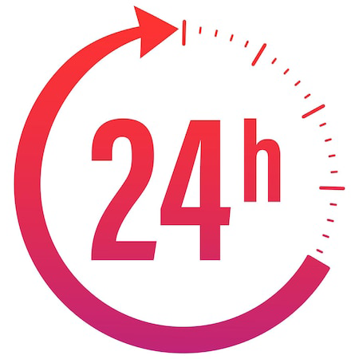

소중함을 알기에
365일 기다리고 있습니다

 

소중함을 알기에
365일 기다리고 있습니다
1666-7501
탑케어동물의료원은 2차 진료 중심의 거점병원으로,
최선의 진료, 최상의 보살핌, 최고의 사랑과 함께 합니다.
치료의 한계를 넘어, 삶의 새로운 가치를 위해 꾸준한 연구를 바탕으로 진료합니다.
최신식 의료장비, 최고의 의료진, 쾌적한 공간으로 보호자도 반려동물도 안심하고 내원하실 수 있습니다.